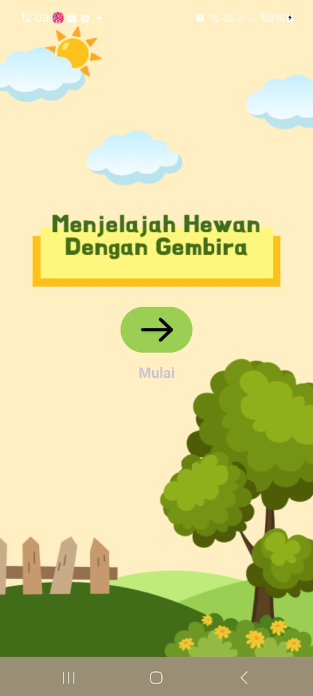
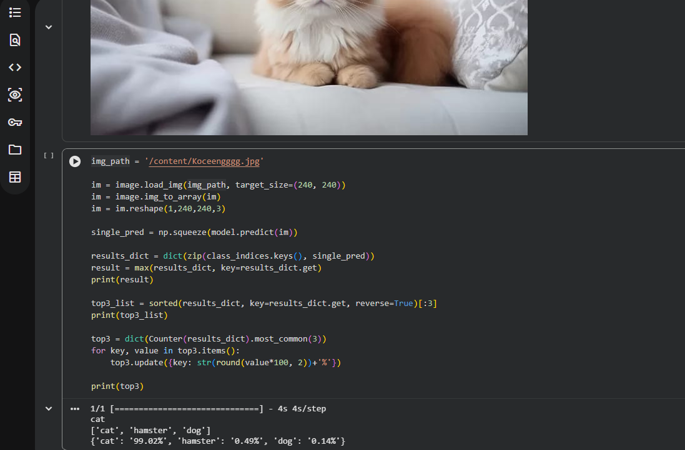
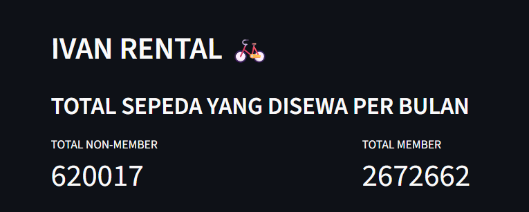
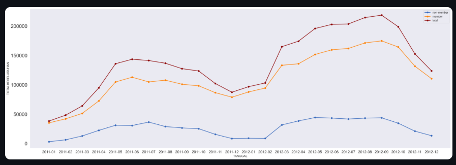

“Animal Pedia” is an animal-themed educational application for preschool children that combines learning and entertainment through information, characteristics, and animal sounds. I also contributed to the development of the machine learning model, achieving an accuracy of over 90%.

The model achieved an accuracy of over 90%.


One of the projects from the Dicoding course focused on transforming messy bike-sharing data into an interactive and insightful dashboard through data cleaning, analysis, and visualization.